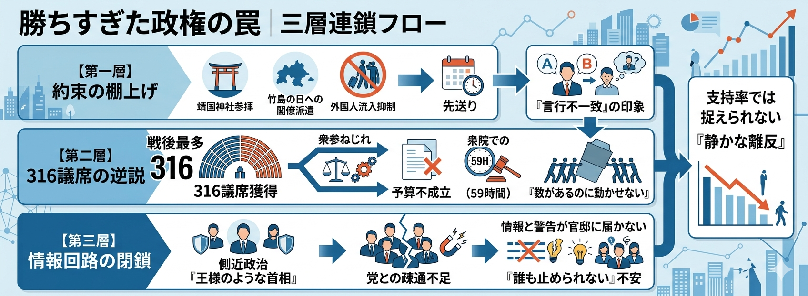

約束の棚上げ
4月21日、靖国神社の春季例大祭が始まった。記者団に参拝予定を問われた高市早苗首相は答えた。「プライベートな日程なので申し上げることはない」。そして例大祭中の参拝は見送られた。
同じ会見でこうも語っている。「どの国であれ、国のために命をささげられた方に敬意を表し、感謝の気持ちを表すことは普通になされるべきだ」。
「普通になされるべき」ことを、自分はしない。言行不一致が、同じ発言の中で完結している。
靖国だけではない。竹島の日への閣僚派遣、外国人流入の抑制——高市政権が「保守の看板」として掲げてきた政策は、ことごとく先送りされている。野党支持者であれ、保守の支持者であれ、「言ったことをやらない」という印象は政治的立場を超えて共有される。そこに右も左もない。
これは「日程の問題」ではない
靖国をプライベートと位置づけることは、保守政治の文法からの逸脱だ。保守とは「先人が積み上げてきた慣習・制度・精神の継承」であり、靖国参拝はその公的実践に他ならない。「個人の日程」に矮小化した瞬間、高市氏は保守政治家から「保守票を取る政治家」に自ら降格した。
「普通になされるべき」と言いながら自分はしない。この矛盾は、高市氏が保守の作法を理解したうえで外交的配慮から参拝を控えているのではなく、保守の本質を実はわかっていないことを示唆している。前者であれば説明できる。後者は、じわじわと作用する。
コアな支持層は一度や二度の先送りには耐える。しかし看板に書かれたものが次々と棚上げされ、「プライベート」という言葉まで飛び出せば、「やはり違う」という感覚が蓄積する。党内の保守派も同じだ。表立って造反はしなくても、求心力は静かに削られていく。
316議席が生んだ逆説
2026年2月8日の衆院選で、自民党は316議席を獲得した。戦後最多。憲法改正発議に必要な3分の2を単独で超えた。
ところが2026年度予算案は、年度内成立を断念した。衆院で59時間という戦後最短記録で審議を打ち切り、強行採決した末の「それでも通らない」である。数で押し通そうとして、数では押し通せなかった。
衆参ねじれは構造問題であり、高市政権が作り出したわけではない。しかし316という数字が問題を複雑にした。「これだけの民意を得た」という確信が、参院との交渉・調整への動機を削いだ。数の正統性と実行の正統性は別物だ。316議席は選挙での信任だが、予算不成立は統治の失点だ。この落差を直視しないまま強行突破を続ければ、「数があるのに動かせない政権」という印象が固定される。
強さが閉じる情報回路
官邸と党の疎通が機能していない。自民党内から「首相は王様のようだ」「1カ月も独り相撲に振り回された」という声が出ている。
強い個性を持つ指導者は、制度的な合意回路を自然に迂回する。これは能力の欠如ではなく、強さの副作用だ。その副作用が316議席という体格になると、毒性が跳ね上がる。「正しいと思うことを、数を持って通す」という統治スタイルは、弱い政権なら野党の抵抗で止まる。強い政権は、党内の異論すら封じ込める。封じ込めた結果、情報と警告が官邸に届かなくなる。

三層は連鎖する
この三つの問題は独立していない。
約束の棚上げが「言行不一致」の印象を育て、強引な国会運営が「数による支配」の印象を固め、官邸の閉鎖が「誰も止められない」という不安を生む。三つが重なったとき、支持率の数字では捕捉できない「静かな離反」が始まる。
昨今、複数のメディアや識者が「高市政権の政治的正統性が問われている」と論じている。分析は概ね正しいが、最も深い層に届いていない。問われているのは、野党や左派メディアが言う「強権」でも「右傾化」でもない。問われているのは、保守の内側からの問いだ——「約束した保守を、実行する意志があるのか」という。